2021 yılında kurulan CyberFlight, TÜBİTAK ve Türkiye Teknoloji Takımı Vakfı'nın desteklediği Teknofest Liseler Arası İHA Yarışmasına katılmaktadır.
Takım, TÜBİTAK tarafından yarışmanın başlangıcında istenen kavramsal tasarım raporu elemelerinden 85 puanla geçerek Türkiye genelinde 314 takım arasında 20. olmayı başarmış, TÜBİTAK tarafından İHA’nın parçalarında kullanılmak üzere maddi destek almaya hak kazanmıştır.
Katılmayı hedeflediğimiz kategori olan Liseler Arası Döner Kanat İHA Yarışması, TÜBİTAK tarafından düzenlenmekle birlikte bir çok lisenin takımına ev sahipliği yapmaktadır.
Takımlar, önceden belirlenmiş olan rotalar ve görevlerde uçuş yapma kabiliyetine sahip olan İHA’lar üretmektedir. Başarılı bir şekilde otonom uçuş sağlanması durumunda takımların yarışmayı kazanma şansları artmaktadır.
© CyberFlight - 2021